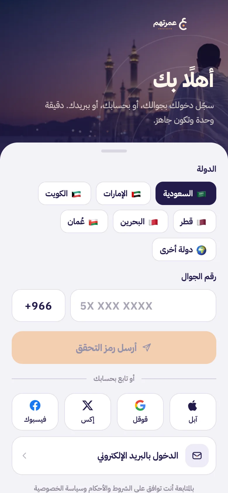

- الرئيسية
- كيف تعمل عمرتهم
كيف تعمل عمرتهم؟
الطريق كامل من جوالك إلى شهادة الإتمام، للعميل الذي يطلب العمرة، وللمؤدي الذي يؤديها في مكة.
أنت تطلب من بيتك، ونحن ننفّذ في مكة
ست خطوات، أغلبها يأخذ دقائق. الباقي يصلك إشعارًا بإشعار.
- 1الخطوة 1
سجّل برقم جوالك
اختر دولتك من دول الخليج الست، واكتب رقم جوالك، ويصلك رمز تحقق في رسالة. ما نطلب منك بريدًا أو كلمة مرور.

- 2الخطوة 2
اختر الباقة
الباقات واضحة بأسعارها بعملة بلدك شاملة الضريبة. لكل باقة مدة تنفيذ ومميزات مكتوبة، وتقدر تضيف الشهادة المطبوعة.

- 3الخطوة 3
اكتب اسم المستفيد
تختار صلة القرابة، وتكتب الاسم كاملًا كما سينطقه المؤدي في النية، وتحدد الجنس وحالته: متوفّى أو حيّ عاجز.

- 4الخطوة 4
حدد الوقت وادفع
أقرب وقت، أو يوم الجمعة، أو تاريخ وفترة تختارها. ثم تراجع الطلب وتدفع، والمبلغ محفوظ لك بالكامل حتى يبدأ التنفيذ.
طلب عمرة البدل · الخطوة 3 من 5الموعدأقرب وقتنسند لأول مؤدٍّ متاحيوم الجمعةفي أقرب جمعة قادمةتاريخ ووقت محددمختارالأربعاء 12 نوفمبر · 06:00 - 08:59الإجمالي شامل الضريبة399 ر.سإلى الدفع - 5الخطوة 5
تابع المراحل السبع
نسند الطلب لمؤدٍّ موثّق الهوية، ويصلك إشعار مع كل مرحلة: الإحرام والنية باسمه، الطواف، المقام وزمزم، السعي، والتحلّل. كل مرحلة بفيديو أو صورة بختم الوقت والموقع.
عمرة البدل عنالمرحوم عبدالله بن محمدالطواف · الشوط 4 من 7الطوافمباشرسبعة أشواط حول الكعبة، يُدعى له في كل شوط▶ فيديو المرحلة · المسجد الحرامالمؤدي م-0417موثّق الهويةاعتمر عن نفسه · تصريح ساري - 6الخطوة 6
استلم الشهادة وملف التوثيق
بعد مراجعة الفريق تصدر شهادة الإتمام باسم المستفيد مع ملف التوثيق الكامل. تشاركها مع العائلة من التطبيق، وتطلبها مطبوعة إذا أحببت.
شهادة إتمام عمرة البدلالمرحوم عبدالله بن محمدتمت العمرة بحمد الله · الشهادة رقم UM-104233المراحل السبعمكتملةراجعها الفريق واعتمدهاملف التوثيق7 مقاطع · 3 صوربختم الوقت والموقعشارك الشهادةتقدر تطلبها مطبوعة ومؤطّرة
جاهز تطلب عمرة عمّن تحب؟
التطبيق قريبًا على المتاجر، وإلى ذلك الحين يستقبل فريقنا طلبك على واتساب ويرتّب لك كل شيء.
للمؤدي: من قبول الطلب إلى التحويل البنكي
كل شيء من تطبيق المؤدي، بدون تنسيق خارجي ولا ملفات ترسلها يدويًا.
- 1الخطوة 1
سجّل ووثّق هويتك
تحمّل تطبيق المؤدي، وتسجّل برقم جوالك، ثم تكمل التوثيق: الهوية، وبياناتك ولغاتك، وميثاق المؤدي، وحسابك البنكي. يراجع فريقنا ملفك قبل التفعيل.
انضم كمؤدٍّأكمل التوثيق1. توثيق الهويةتم2. بياناتك ولغاتكتم3. ميثاق المؤدياقرأ ووافق4. الحساب البنكيآيبان باسمكأرسل للمراجعة - 2الخطوة 2
استلم الطلبات المتاحة
إذا كنت متاحًا تصلك الطلبات بمبلغ واضح ومهلة تنفيذ. تقبل ما يناسبك، وترفع لقطة تصريح العمرة من تطبيق نسك قبل البدء.
أهلًا بكالطلبات المتاحةأنت متاح لاستلام العمراتمفعّلعمرة البدل العاجلةعاجلعن أب العميل · متوفّىباقي 20 ساعة250 ر.سعمرة البدل المميزةمتاحعن أم العميل · فيه دعاء خاصباقي 3 أيام190 ر.ساقبل الطلب - 3الخطوة 3
صوّر كل مرحلة من داخل التطبيق
التصوير يفتح فقط عندما تكون في الميقات أو داخل الحرم. تنطق النية باسم المستفيد، وتوثّق الطواف والسعي بعدّاد الأشواط، وصورة للتحلّل.
الإحرام والنية · أنت في الميقات«لبيك عمرةً عن المرحوم عبدالله بن محمد»
انطقها بصوت واضح أمام الكاميرااضغط للتسجيل · 5 ثوانٍ على الأقل - 4الخطوة 4
مراجعة الفريق
بعد إرسال التوثيق يراجعه الفريق ويعتمد العمرة. إذا كان هناك نقص في مرحلة نطلب منك استكماله قبل الاعتماد.
تنفيذ العمرة · UM-7401تقبّل الله منك ومنهأُرسل التوثيق للمراجعةنراجعه ونعتمده عادة خلال ساعاتالإحرام والنية1 مقطعالطواف7/7 أشواطالسعي7/7 أشواطالحلق أو التقصير1 صورة - 5الخطوة 5
أرباحك إلى حسابك
بعد اعتماد العمرة ينتقل المبلغ لرصيدك المتاح، وتطلب تحويله إلى الآيبان المسجّل باسمك من التطبيق.
الرصيد المتاح للتحويل440 ر.ستحت المراجعة: 0 ر.سحوّل لحسابي البنكيعمرة UM-7401 · معتمدة+2506 نوفمبرعمرة UM-7406 · معتمدة+1904 نوفمبرتحويل إلى الحساب البنكي−45028 أكتوبر · محوَّل
مقيم في مكة واعتمرت عن نفسك؟
اقرأ شروط الانضمام وسجّل اهتمامك، ونبلّغك أول ما يتوفر تطبيق المؤدي.